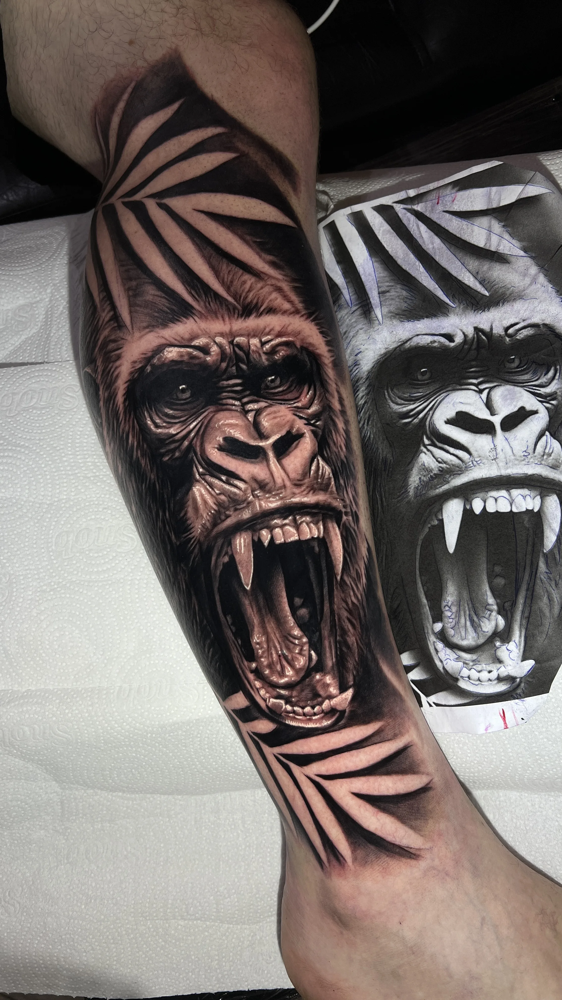
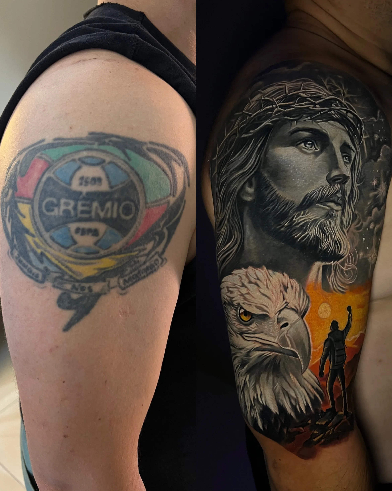
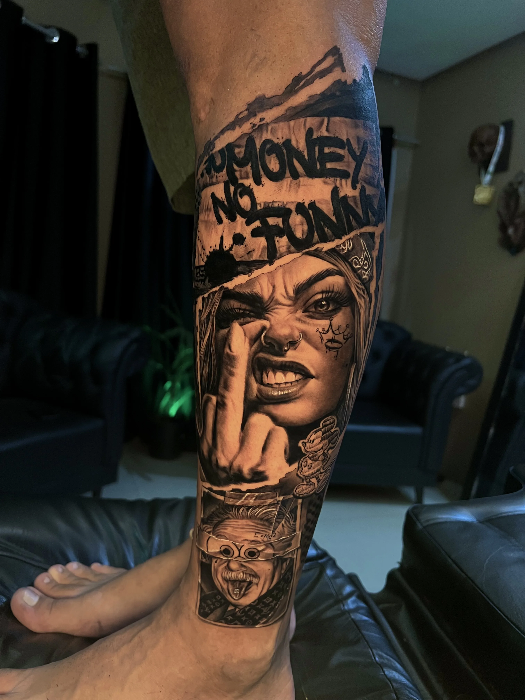
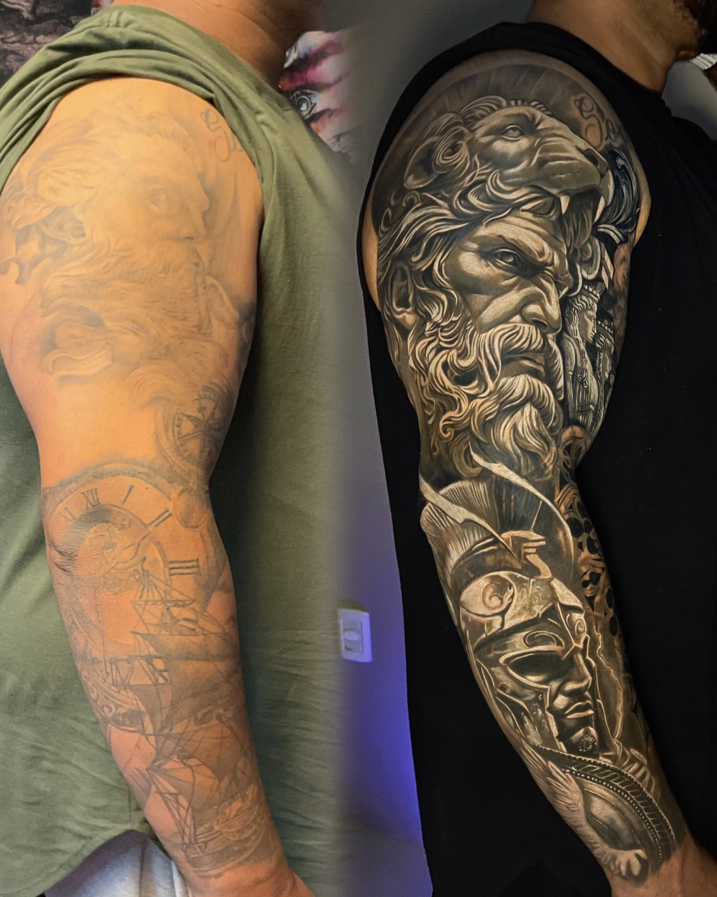
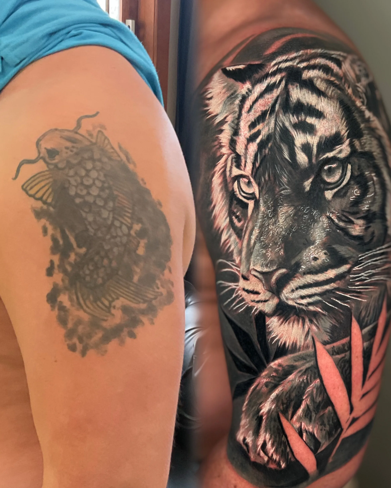
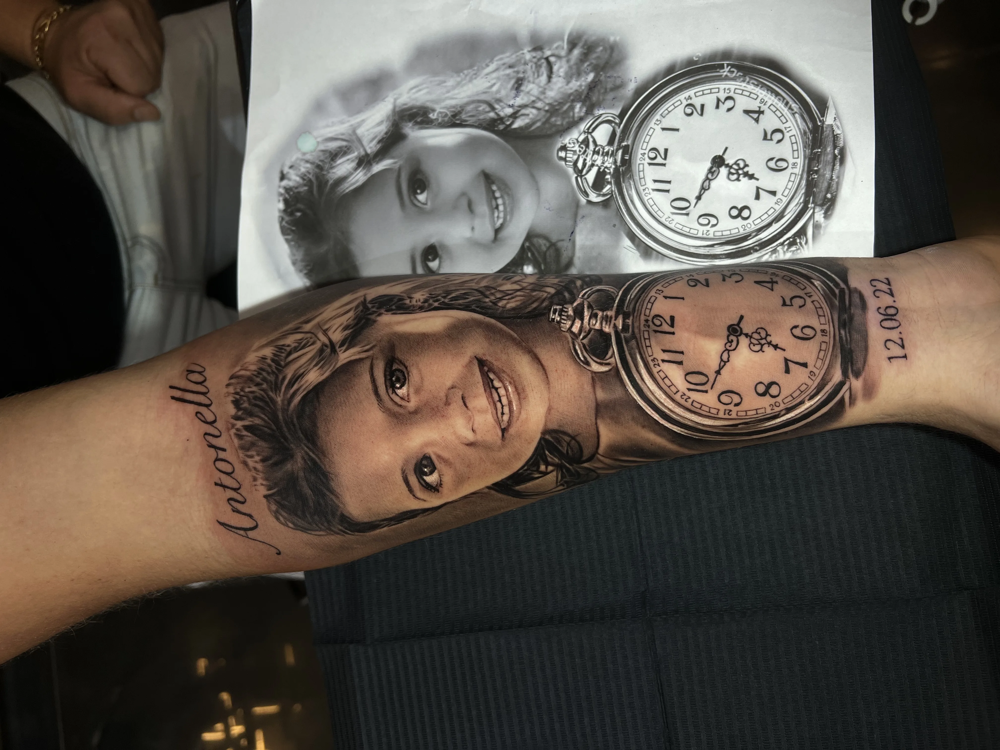
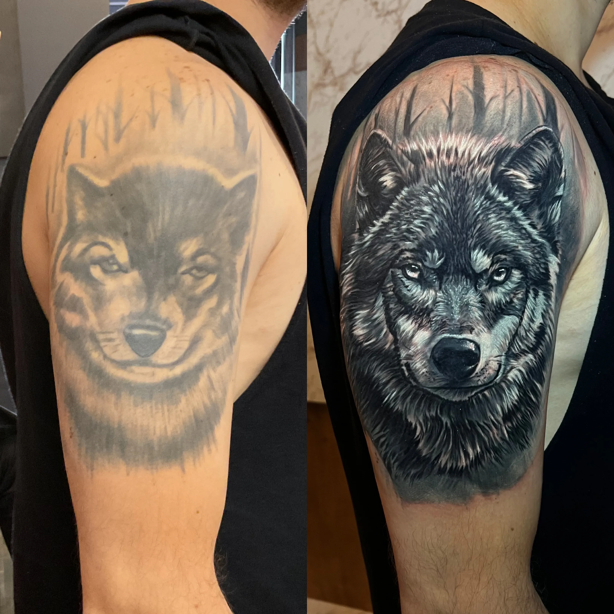
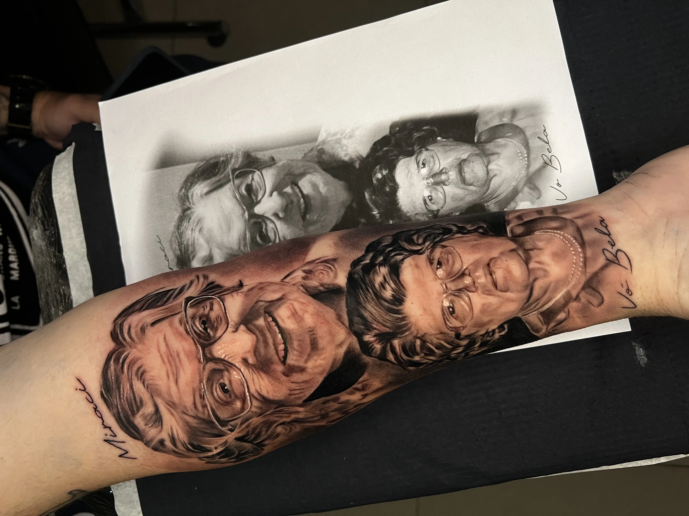
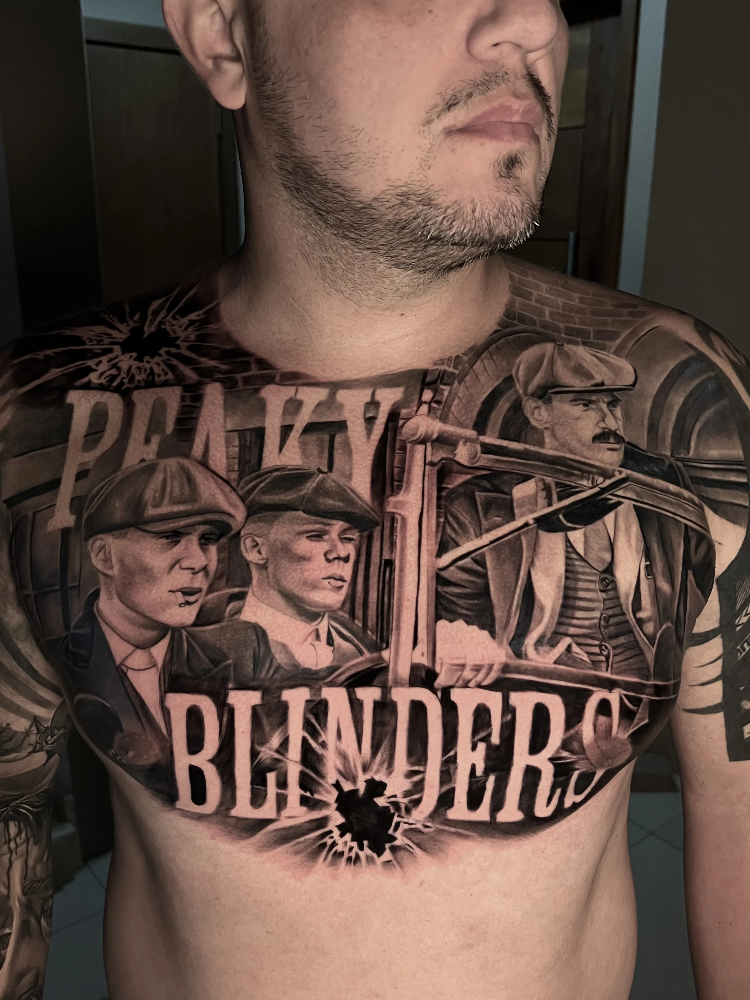
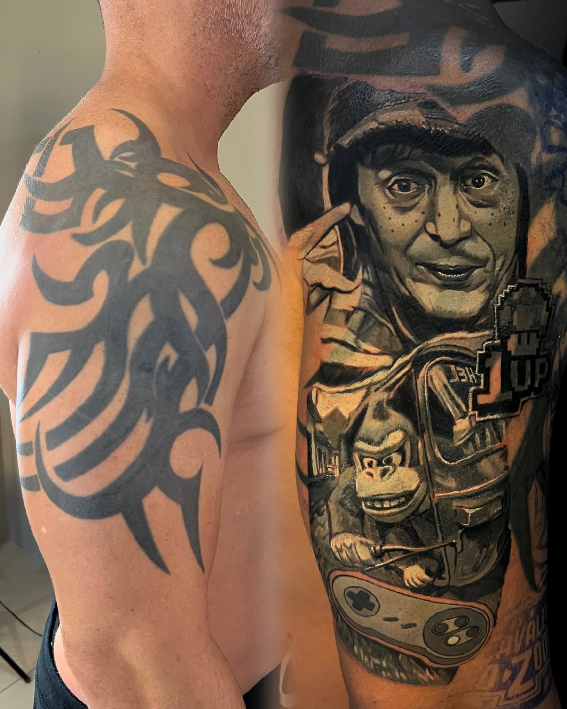

Depoimentos
Histórias reais
.jpeg)

.jpeg)
.jpeg)
.jpeg)

.jpeg)


Mais do que técnica na pele, cada tatuagem nasce da história de quem a carrega.
Quero conhecer esse processo
Nem sempre uma tatuagem começa no desenho.
Muitas vezes, ela começa em uma fase da vida, em uma cicatriz, em uma mudança — ou em algo que precisa ganhar forma de um jeito único.
Aqui, cada criação nasce da escuta, do significado e da construção de algo que faça sentido de verdade para quem vai levar essa arte na pele.
Meu nome é Catriel Medeiros e trabalho com tatuagem há mais de 11 anos, especializado em realismo preto e cinza e coberturas extremas.
Ao longo da minha trajetória, desenvolvi um método de trabalho que vai muito além da técnica. Para mim, uma grande tatuagem não nasce apenas da habilidade artística — ela nasce da história de quem a carrega.
Por isso, escolhi trabalhar de uma forma diferente: atendo apenas um cliente por dia.
Esse tempo é dedicado a compreender profundamente cada pessoa que passa pelo meu estúdio. Antes de qualquer desenho, existe uma conversa. Um momento de escuta real, onde busco entender as experiências, significados e ideias que cada cliente deseja transformar em arte.
Meu objetivo não é apenas realizar uma tatuagem, mas criar uma obra de arte exclusiva, pensada individualmente para o corpo e para a história de cada cliente.
Quero conhecer esse processo"Com foco em realismo preto e cinza de alta precisão e em coberturas complexas, meu trabalho busca transformar ideias em imagens marcantes — tatuagens que carregam significado, personalidade e um nível de execução técnica impecável."— Catriel Medeiros










Nem sempre é simples colocar em palavras tudo o que uma tatuagem representa.
Mas quando existe essa vontade de marcar algo na pele, normalmente existe também uma história por trás disso.
No meu processo, cada criação nasce da escuta, da presença e da construção de um projeto pensado de forma individual.
Mais do que executar uma ideia, meu objetivo é entender o que faz sentido para você e transformar isso em arte com técnica, precisão e personalidade.
Se você sente que esse é o momento de dar esse passo, esse é o começo.
Quero começar meu projeto